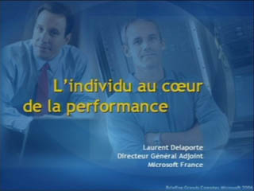
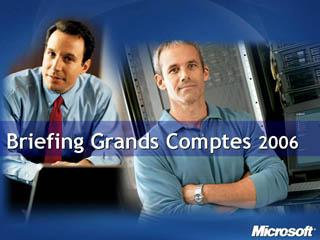
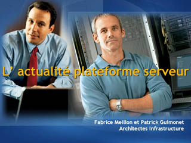
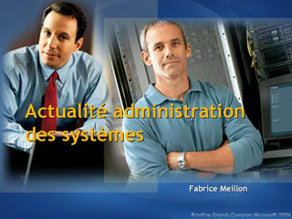
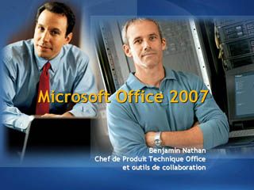
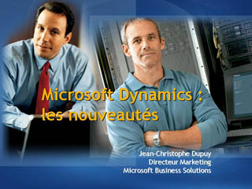
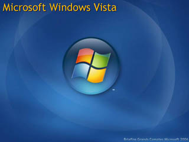

L' Individu au Coeur de la Performance

Speaker(s): Laurent Delaporte
Le Systeme d'information: Vision et Stratégie

Speaker(s): Philippe Ouensanga, Régis Mauger
L'actualite Plateforme Serveurs

Speaker(s): Fabrice Meillon
Actualiet Administration des Systemes

Speaker(s): Fabrice Meillon
La Strategie en Matiere de Securite: Menaces et Défenses
Speaker(s): Stanislas Quastana
Microsoft Office 2007

Speaker(s): Benjamin Nathan
Microsoft Dynamics: Les Nouveautés

Speaker(s): Jean-Christophe Dupuy
Microsoft Windows Vista: Evolution du Poste de Travail

Speaker(s): Microsoft Architects Team